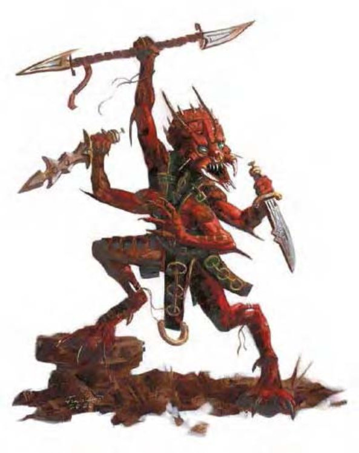

这类类似爬行动物的生物有四条手臂、鲜红的鳞片，以及深陷、锐利的眼睛。它的身高不及人类。这些极其恶毒的锡尔族以其残暴而亵权的暴力统治闻名。它们的生活往往是由对于邪恶行为的充分享受及其对于残忍行径的热忱喜爱结合而成的。部分锡尔族表现得野蛮且残暴；另一侧则依靠其残酷的秩序表现得相对文明一些。
锡尔族站起来大概4到5英尺高，体重差不多100磅。锡尔族说炼狱语。
战斗锡尔族是非常危险的敌人，能够用四只手臂同时进行攻击。相对而言更加文明的锡尔族会使用武器，通常一次使用两件，以便于腾出另外两只手臂进行擒抱攻击。锡尔族通常会埋伏在灵界等待合适的猎物经过，然后施展位面行走的能力发动突袭：通常，一到两名锡尔族会通过攻击以牵制身强力壮的敌人，随后采取防御姿态以便于其他锡尔族能就此转移到有利位置发动攻击。
| 资料栏位 | 锡尔族 (Xill) 中型异界生物 (跨位面) |
|---|---|
| 生命骰 | 5d8+10 (32hp) |
| 先攻 | +7 |
| 速度 | 40英尺 (8格) |
| 防御等级 | 20 (+3敏捷, +7天生), 接触13, 措手不及17 |
| 基本攻击/擒抱 | +5/+7 |
| 攻击 | 短剑+7近战 (1d6+2/19-20) 或爪抓+7近战 (1d4+2) 或长弓+8远程 (1d8*3) |
| 全力攻击 | 2短剑+5近战 (1d6+2/19-20, 1d6+1/19-20) 以及 2爪抓+5近战 (1d4+1) 或 4爪抓+5近战 (1d4+2) 或 2长弓+4远程 (1d8*3) |
| 占据/触及 | 5英尺/5英尺 |
| 特殊攻击 | 殖卵, 精通攫抓, 麻痹 |
| 特殊能力 | 黑暗视觉60英尺, 位面行走, 法术抗力21 |
| 豁免 | 强韧+6, 反射+7, 意志+5 |
| 属性 | 力量15, 敏捷16, 体质15, 智力12, 感知12, 魅力11 |
| 技能 | 平衡+13, 攀爬+10, 交涉+2, 逃脱+11, 恐吓+8, 聆听+9, 潜行+11, 察言观色+8, 侦察+9, 翻滚+11, 绳技+3 (捆绑时+5) |
| 专长 | 精通先攻, 多重攻击B, 多重战斗 |
| 区域 | 灵界 |
| 组织 | 单独，或者成队 (2-5) |
| 挑战等级 | 6 |
| 宝物 | 标准 |
| 阵营 | 总是守序邪恶 |
| 进化 | 6-8HD (中型), 9-15HD (大型) |
| 等级调整 | +4 |
殖卵 (Implant, Ex)：锡尔族可以在陷入麻痹的敌人身上殖卵，使用此能力属于标准动作。植入的幼体会从体内慢慢吞噬宿主，90天之后破体而出。施展法术移除疾病可以消灭受害者体内的卵，成功通过一次DC25的医疗检定同样可以做到这一点。如果检定失败，可以重试，但每次检定（无论成功与否）都会对病患造成1d4点伤害。
精通攫抓 (Improved Grab, Ex)：为了使用这一能力，锡尔族必须以一记或是多记爪抓攻击成功命中对手。随后，它便可以尝试一次不会引发对方借机攻击的自由动作展开擒抱。擒抱检定时，每记命中的爪抓攻击都将给予这一擒抱检定+2加值。如果它在擒抱对抗中胜出并在下一轮中继续维持擒抱，则其将会自动发动噬咬攻击。这一噬咬攻击不会造成伤害，但会注入麻痹毒液。
麻痹 (Paralysis, Ex)：任何被锡尔族的噬咬攻击击中的生物，都必须通过DC14的强韧检定，否则会麻痹1d4小时，豁免检定DC基于体质属性。
位面行走 (Planewalk, Su)：这些位面旅行者喜欢在空间的褶皱之间滑流，如同凭空出现般攻击敌人。它们可以以一个移动动作从灵界现身，但回到灵界则需要2轮，在此期间它们无法移动。随着它们缓缓淡出这一位面，它们将变得更加难以击中，敌人在第一轮承受20%的失手率，第二轮则是50%的失手率。锡尔族也可以携带一名自愿或无助的生物一起进行位面行走。
一群锡尔族中的领导者通常是牧师，锡尔牧师可从以下领域中任选两个：邪恶、守序、力量、或是旅行。